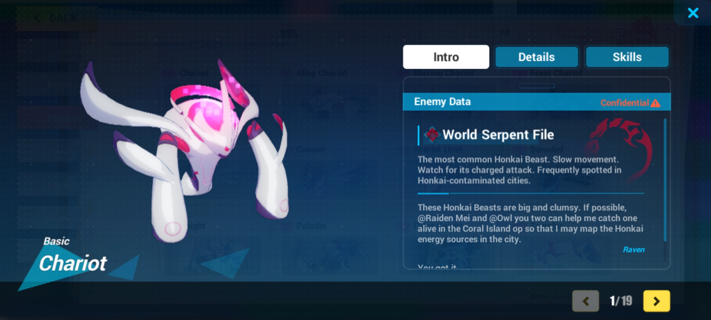
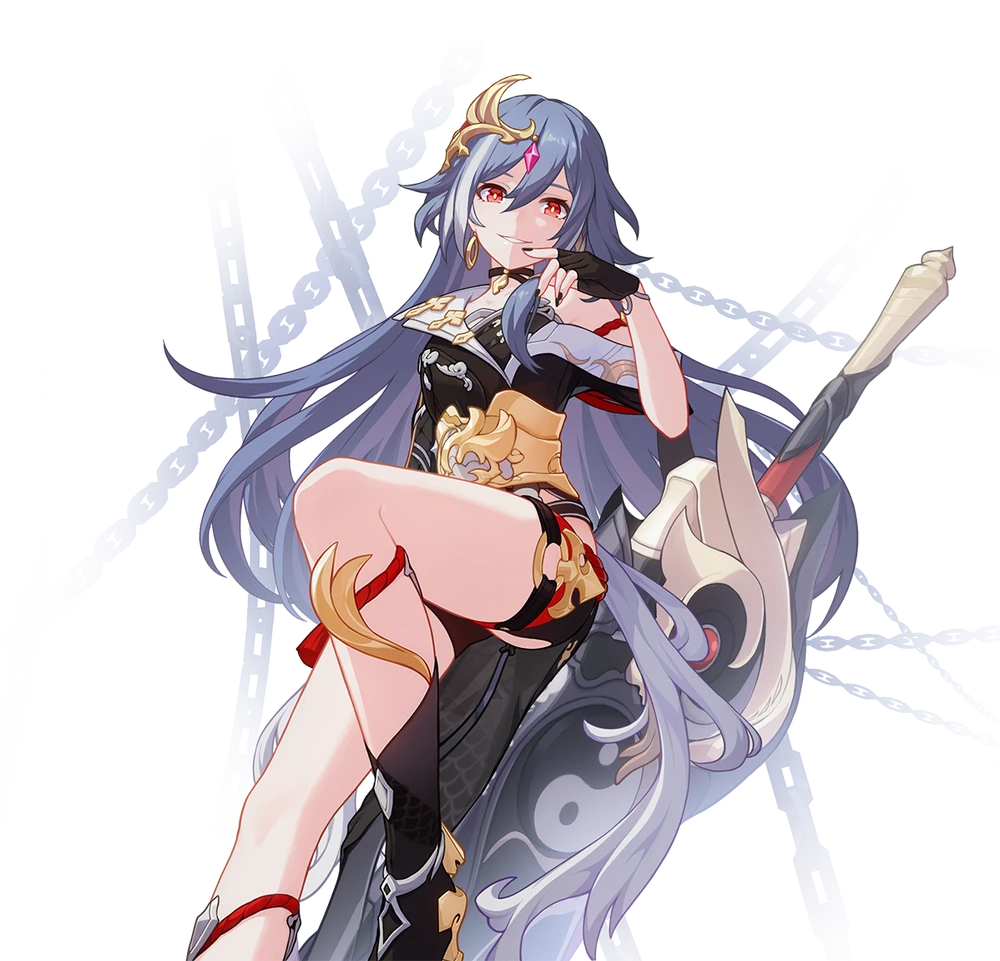
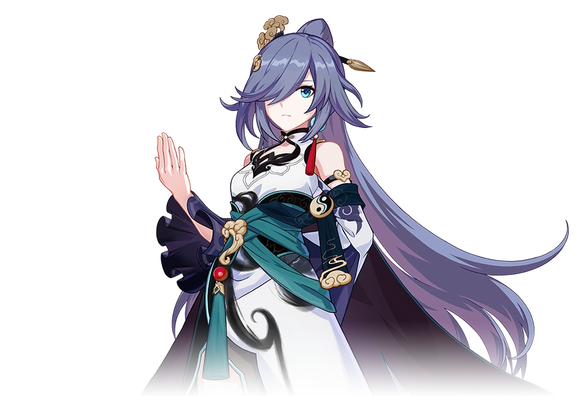

en este, la humanidad esta luchando contra algo llamado el "honkai" de aqui el nombre del juego, el tercer impacto del honkai, honkai se traduce algo asi como plaga, donde algun tipo de dios quiere acabar a la humanidad, el honkai funciona algo asi como el fin de los tiempos y donde los llamados "herrschers" son los encargados de comandar al honkai para destruir mundos/realidades siendo el equivalente a los jinetes del apocalipsis, donde en vez de ser 4, son 14 herrchers y cada uno controla un elemento en especial, por ejemplo algunos son: los herrschers del vacio, razon, corrupcion, trueno, el fuego, sentencia, origen, verdad, hielo, de la muerte, del renacimiento y de la finalidad y fin, son mas de 14 por cuestines mas tecnicas,donde la humanidad buscara sobrevivir a la extincion
mi personaje favorito o uno de mis favoritos es la herrcher de la sentencia y fu hua, fu hua es una maestra de pelea de origen chino, que a vivido por mas de 50000 años pero por una modificacion genetica ella tiene la apariencia de una chica de 18 años la cual fue usuaria del despertar de un herrcher, el de la sentencia, uno que fue muy agresivo, peligroso y despiadado, incluso venciendo con facilidad al poder del herrcher de la razon y del vacio, y la cual la comunidad la quiere mucho por su famoso "yatta" que dice al terminar un combo, fu hua a vivido mucho tiempo siendo una de las pocas humanas de la primera era, viendo ir y venir a muchos seres queridos, quien incluso le toco pelear en contra de su camarada que sse volvio una amenaza despues de perder a la chica que amo y segado por el dolor se sitorciono su vista del mundo exterior y fu hua para proteger a la humanidad ella salvo al trio de protagonistas para darle tiempo y que con mucho dolor peleo contra su antiguo camarada
 